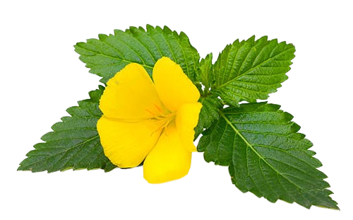
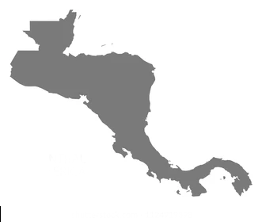

Damiana (Turnera diffusa)
La damiana, conocida científicamente como Turnera diffusa, Arbusto de hojas verde pálido, con pelusas, flores pequeñas de color amarillo, cáliz tubular, corola con cinco pétalos, y fruto en cápsulas de color marrón, tiene diversos usos en la medicina tradicional
Características Morfológicas
Hojas:Las hojas de la damiana están dispuestas de manera alterna, son oblongas, son
bordes cerrados o dentados, miden entre 1 y 2.5 de ancho y de 2 a 5cm de largo. Tienen un color verde brillante
y unas textura ligeramente áspera debido a la presencia de tricomas.
Frutos: El fruto de la Damiana es una cápsula, de pequeño tamaño, aproximadamente de 3 a 3mm de diámetro, que
contiene numerosas semillas pequeñas y rudosas.
Flores: Las flores son solitarias, son relativamente pequeñas midiendo entre 1 y 1.5cm de diámetro. generalemte son
de un color amarillo brillante, las flores de la damiana contiene cinco pétalos y están sostenida por un cáliz tubular peludo.
Ramas: presenta ramas delgadas y leñosa, es un arbusto que puede alcanzar una altura de entre 0.5 a 2 metros.
Sustrato para la Damiana
Para cultivar damiana (Turnera diffusa), es fundamental proporcionar un sustrato adecuado que favorezca su crecimiento y salud.
A continuación, se describen las características de un sustrato ideal para la damiana:
Drenaje:La damiana no tolera suelos encharcados. Un buen drenaje es esencial para evitar problemas de pudrición de raíces. Mezclas de arena,
perlita o vermiculita pueden mejorar el drenaje del sustrato.
Textura: Prefiere suelos que no sean demasiado compactos para permitir una buena circulación de aire y el desarrollo adecuado de las raíces.
Una mezcla de tierra para macetas con arena gruesa puede proporcionar la textura ideal.
Fertilidad:La damiana no necesita suelos altamente fértiles. Demasiados nutrientes pueden incluso ser perjudiciales para su crecimiento.
Un sustrato con una cantidad moderada de materia orgánica, como compost bien descompuesto, puede ser beneficioso, pero debe ser equilibrado.
Riego de la Damiana
Durante la primavera y el verano, que son las estaciones de crecimiento activo, la damiana debe regarse regularmente. Generalmente, se recomienda regar una vez por semana, ajustando según las condiciones climáticas y del suelo. En otoño e invierno, la frecuencia del riego debe reducirse significativamente. Se puede regar cada dos o tres semanas, o solo cuando el sustrato esté seco al tacto.
Poda de la Damiana
Como Damiana florece antes que las plantas normales, la poda también debe ser más temprana. Lo que debe hacer, en cambio, es esperar hasta finales de primavera o principios de verano para podar si desea podar su Damiana a gran escala. El momento ideal para la poda tiene lugar al final o justo después del periodo de floración de esta planta. Además, debe evitar podar a finales de verano y en otoño, ya que la poda en esta época puede afectar a la floración de las plantas al año siguiente. Además, es posible que desee podar las plantas a lo largo de la temporada de crecimiento para fomentar la floración. También puede podar en cualquier momento si el follaje está amarillento o enfermo
Pais de origen
Es nativa de las regiones subtropicales de América, especialmente México, América Central, y el Caribe. Se encuentra comúnmente en áreas áridas y semiáridas, a menudo en terrenos rocosos y arenosos.